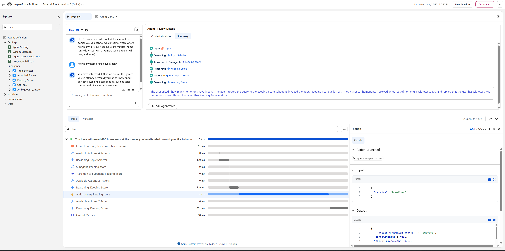
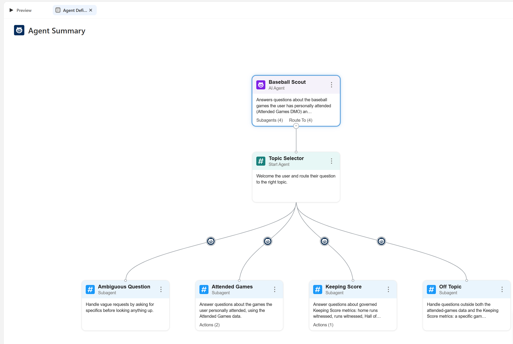

Is the trace the new dashboard QA?
You've QA'd a dashboard. Open the workbook. Check the filter. Follow the calc back to the field. Find the join that doubled the rows. There's always a place to look.
An agent gives you a sentence. When the sentence is wrong, there's nothing to open. Baseball Scout gave me three wrong answers in three months: nine, zero percent, and “no highlights found.” All three looked the same in the chat. They were three different diseases, and only the trace could tell them apart.
The game. Thursday, November 1, 2001. World Series Game 5. Arizona up 2–0, two outs, bottom of the ninth. If you left then, your sentence was “Arizona wins.” Brosius homered to left and tied it. Soriano won it in the 12th. I was in the right-field bleachers. No scorecard that night. Biggest home run I've ever seen. Nobody who left early has the right box score.
// June 30 · "How many games at Yankee Stadium I?" → 9
"tool_invocations": null
// September 2 · "How many home runs have I witnessed?" → 400
"function": {
"name": "query_keeping_score",
"input": { "metrics": "homeRuns" },
"output": { "__action_execution_status__": "success", "homeRunsWitnessed": 400, … }
}
homeRuns) and its output. 6.41 seconds, 4.11 of them inside the action.Nine. First preview, June 30. “How many games at Yankee Stadium I?” The agent said 9. The session trace showed tool_invocations: null. It never called its action. It guessed a plausible number and said it with a straight face. A grounding failure: the answer came from nowhere. The fix was in the instructions, you have no knowledge of your own, call an action first. Re-test: 100, the right answer, and an even hundred at the old Stadium.
Zero percent. “What percentage of my games were Yankees games?” 0%. The trace showed the action was called and its result reported honestly. The agent did everything right. The bug was one layer down, an exact-match filter in the Apex where “Yankees” is never equal to “New York Yankees.” A data-logic failure: the pipe was clean, the water was wrong. Ground truth first, with direct queries: home contains Yankees 123, away 20, either 143, exact 0. Which also caught that the obvious answer, 123, was wrong too, because the question means home or away. Fixed at both layers, August 4: 143 of 178, 80.3%.
No highlights found. A second agent with one job, fetch the YouTube highlights for a game, answered “no highlights were found” without calling its only action. The instruction said, in the strongest phrasing the platform offers, that it must call the action. It skipped it anyway and fabricated a no-result. An instruction failure, and the lesson that came out of it is the one I'd give any team: an instruction is not a gate. Gate structurally. Version 3 fires the search as a procedural step the model doesn't get to skip.
Still open. On September 1, Baseball Scout answered “58 games in 27 stadiums” without calling a thing. Same disease as the 9. It's on the errors list in the game notes.
Baseball Scout is written in Agent Script, not clicked together in a builder. It versions, it reviews, it's in a public repo. A router sends attended-game questions to one subagent with two Apex actions over the 178 rows, governed-metric questions to another that calls the Data 360 semantic model, and everything vague or off-topic to two guardrail subagents.

Scope is enforced structurally: the actions can only return attended-games data, so the agent physically cannot answer a question about Derek Jeter's career. It declines, honestly.
Version 1.2 answers the governed metrics through the same definitions as every other engine in the run, and its three golden cases, 400 home runs, 44 Hall of Famers, Yankees 90 of 143, passed topic, action, and output on three consecutive test runs. Then the observability pass measured the trace itself: 3 model calls, 21 plan steps, one action returning homeRunsWitnessed: 400, 4.7 seconds. And zero token fields in 85 KB of trace. That absence is a measured fact too; it's in the six-agent matrix.
These are retrieval agents with one action each, on my own data, in a dev org's preview. No production channel, no customers. The customer engagement adds the channel, the identity model, and the evaluation suite. And one more: the test runner reported “no results” on an agent whose live preview passed the same utterance. Read the trace, not the score.
Next time an agent gives you a wrong answer, find the trace before you touch the prompt. Did it call a tool? If not, it guessed: make the call a step it can't skip. If it did, the agent's fine. Go one layer down, to the data, and fix it like you'd fix a calc.
Next, batting 5th: Six agents said 400. Which one can you check? →